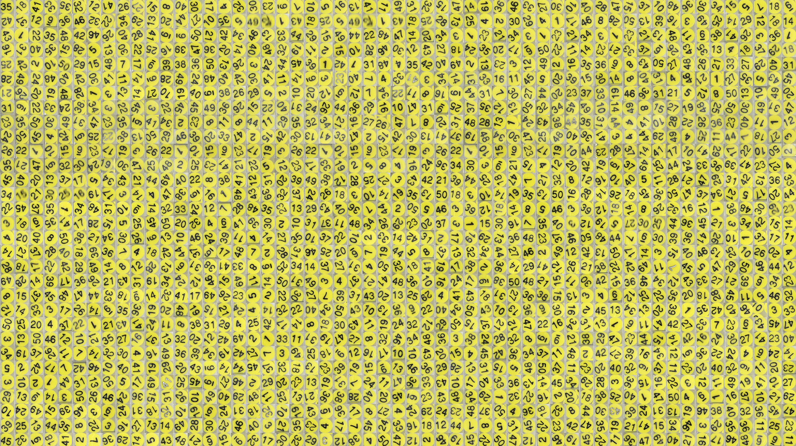
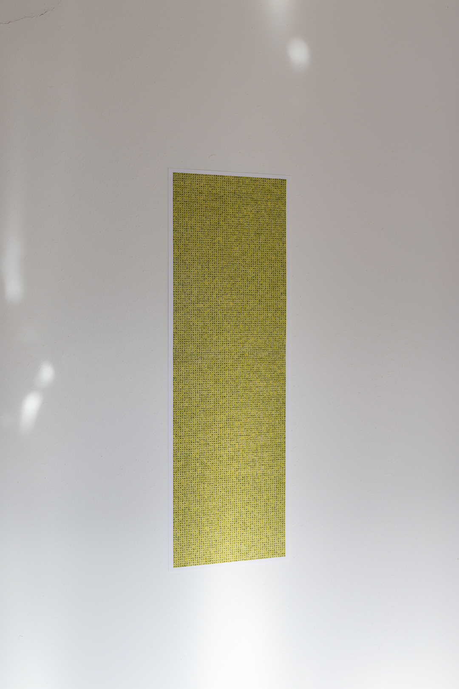

43% Random
2022
Number toy, DC motor, camera, microcontroller, plastic
6 x 10 x 7.5 cm
I found this toy in a second hand shop. It has a clear plastic shell with small tiles numbered 1-50 on the inside. There is a small "selector column" on the left which can be used to separate a few of the tiles from the rest. Who knows its original purpose, but to me it seems a sort of lottery number picker.
I was curious, how random are these numbers really? I built a small testing rig, a DC motor with a hall sensor attached to detect each full rotation. On each spin, a photograph was taken. Using computer vision techniques, the tiles were individually extracted from the selector column of each image. They were then identified using a neural network. In total, 42 kilobits of data was collected.
The bitstream was run through the NIST's Statistical Test Suite for Random and Pseudorandom Number Generators. In the end, it was found to be random in 7 of the tests and non-random in 9.
What a shame. I really wanted it to be more random.

